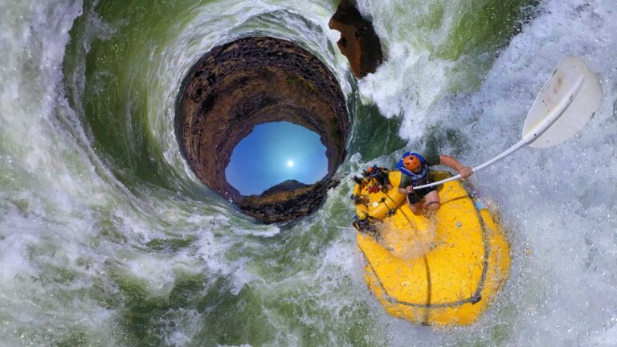
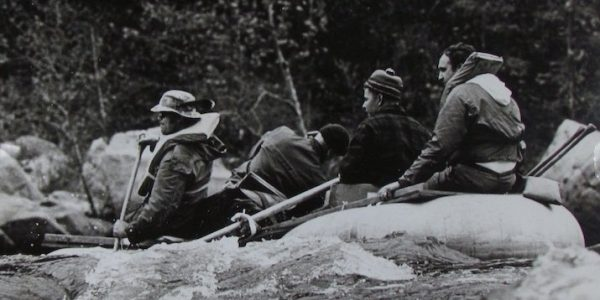
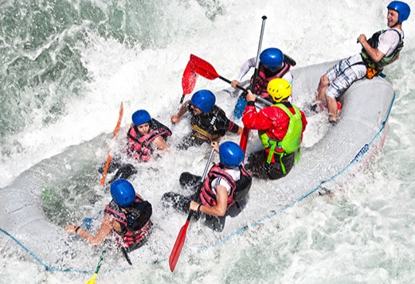
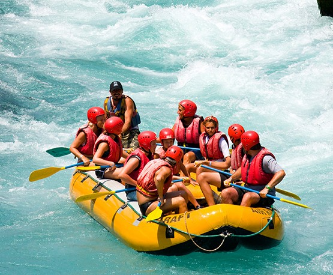
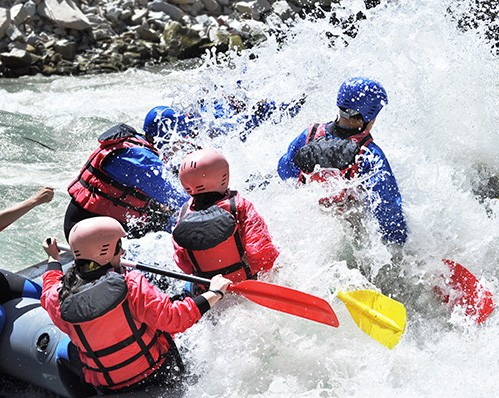
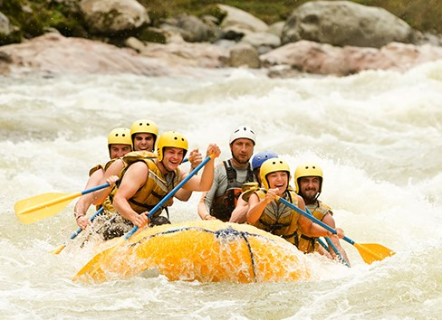

Nossa missão é proporcionar experiências inesquecíveis, promovendo aventura, segurança e contato com a natureza. Acreditamos que cada descida pelo rio é uma oportunidade única de diversão, trabalho em equipe e superação.

Nossa missão é proporcionar experiências inesquecíveis, promovendo aventura, segurança e contato com a natureza. Acreditamos que cada descida pelo rio é uma oportunidade única de diversão, trabalho em equipe e superação.
A White Water Rafting nasceu da paixão pela aventura e pelo desejo de compartilhar experiências emocionantes em rios e corredeiras. Desde nossa fundação, buscamos oferecer passeios seguros e memoráveis para pessoas de todas as idades.

Ao longo dos anos, expandimos nossas atividades e nos tornamos referência em turismo de aventura. Nossa equipe é formada por guias experientes e certificados que garantem diversão e segurança durante toda a jornada.




